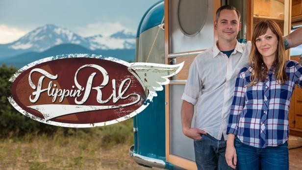

Rv shows on tv: Ultimate Guide.
Some of us have a great passion for all things RV. One thing i love doing in my free time is watching rv shows on tv. Below you will see all the shows i loved watching before i started college. Now i am too swamp with assignments to keep up fully.
Flipping Rvs

Rock the park
Going RV
The Rvers
BEACHIN’ RVS
Rock My RV
This show has always been on the top of my list of favorite rv shows to watch on tv. Watching this show will introduce you to the owners of Flyte Camp Justin and Anna Scribner. This couple does vintage restoration on trailers they purchase. They're shop is fully equipped to handle any restoration job and their show is a good starting point for someone who wants to do resto-jobs on their own rvs. Their shop is located in Ben, Oregon and watching each episode will never disappoint to deliver meaning information. This show is just a wealth of industry knowledge cramped into each episode and i usually watch each episode with a pencil and paper to take notes
If you decide to watch this rv tv show, you can find it on Great American Country.

The Rock the park show follows two guys Jack Steward and Colton Smith on their journey across America visiting great national parks. They visit these national parks to highlight how beautiful they are, the wildlife they have and all the amenities they have.

This tv show follows ordinary people on their journey of changing their normal living circumstances to living life in an rv. Some people make an easy transition from a regular house to a regular rv, others not so well. This show is really interesting and it gives viewers an idea of what to expect if they themselves decide to take that same leap of living full time in an rv. Some families on the show are not moving out of a house and into an rv, some people are just trying to see if a larger rv than the one they currently have is the right move.

Friends and contributors to the book "Living the RV Life" are part of a tv show called "The Rvers". This rv tv show started in the fall of 2019 on the Discovery Channel and PBS in the USA. If you are in Canada you are in luck because you will be able to watch it on Bell or you can stream it on Amazon, iTunes and other streaming platforms. The producer and creator, Anthony Nalli has gotten Caite and Tom from Mortons and Cherie and Chris from Technomadia to be co-stars of the tv show. If you are worried about The Rvers being just another drama series then you can rest assured that it will be extremely informative and focussing on educating new and old rvers about the rv life. If you are interested in learning about what it is like to own an rv or what it is like to live in an rv then The Rvers is the show to watch.

BEACHIN’ RVS is a tv show that follows a husband and wife team Anna and Justin on their journey across the country while they seek out vintage rvs and transform them into beach bungalows on wheels. This couple goes to trailer graveyards to try and find hidden gems that other people might have missed. They buy these rvs or trailers and bring it back to their shop in Bend, Oregon. When the rv or trailer is in their shop, they will give it a full makeover and then it will be ready for the open road. The show also follow buyers when they purchase new rvs and record the process they follow when they decide to bring said rv to an affordable waterfront location which sometimes is just like paradise.

Rock my rv is a new rv show on the Travel Channel. It premiered on the 29th of May, 2020. The show is hosted by Bret Michaels. Bret Michaels is an American singer and song writer who brings flavor to the show. He is well known around the world and has sold 15 million records in the united states and over 45 million records world-wide.
Rv Tv Shows on Amazon
The Far Green Country (2019)
The Leisure Seeker

This show has a 4 out of 5 star rating on amazon. It is a show about a couple who is struggling to make ends meet. They ultimately decided to sell their belongings, move out of their house, and set out on the open road to see if their luck will change. You will be in for a mixture of hardship, comedy, and adventure.

The leisure seeker show takes you along with a couple on their journey all over the US in their RV they nicknamed "The Leisure Seeker".
Conclusion
Rv shows are fun to watch and they provide great entertainment while at the same time giving its viewers great valuable information. Tune in to any of these rv tv shows and enjoy.